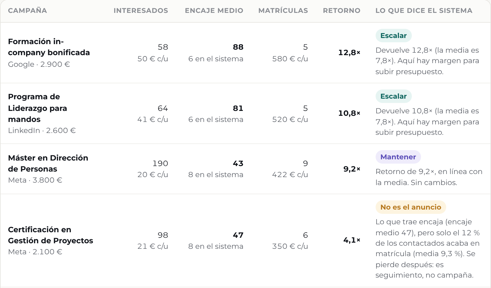

Para escuelas de formación online
De captar solicitudes a conseguir alumnos.


PublicidadLandings y formulariosLead scoringWhatsApp IAGestión de citasCRM y ventas
Captación, seguimiento y mejora continua.
Solicita tu diagnóstico gratuito